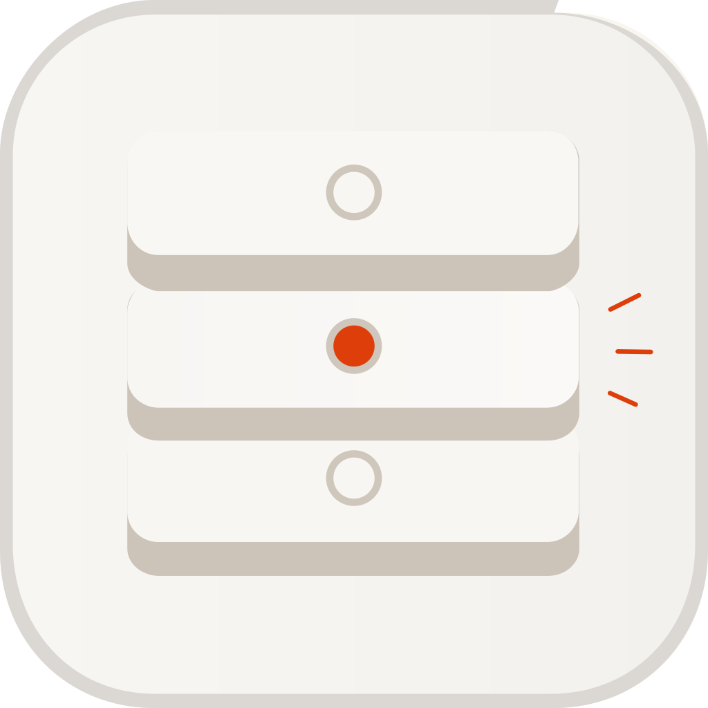
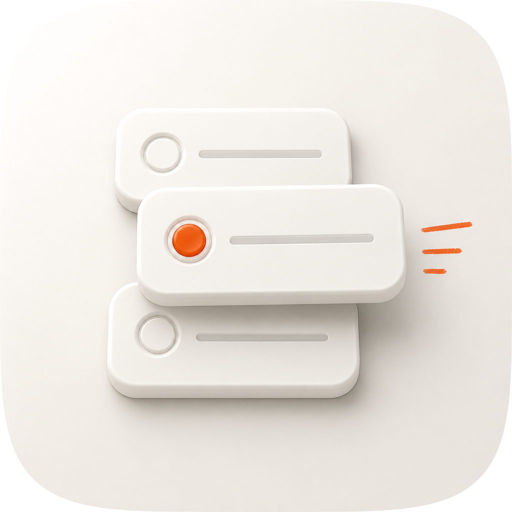

| Take | Hero at 1024, then renders at 128 / 64 / 48 / 32 / 16 css px (2× retina sources), plus the 16px squint magnified | Rubric | Verdict |
|---|---|---|---|
| A · icon.svghand-authored layered SVG, fidelity round 12 — SHIPS | 11 / 12 | Full-bleed 1024 with the marketplace superellipse as a clip: no baked corner radius, no baked drop shadow. Four real layers (bg/mid/fg/highlight) with the drawn card, its bead and the margin note in fg, so identity survives Dark/Clear/Tinted. Value carries the hierarchy and colour is the last ten percent: the two options still in the stack are clay in shade (2.25–3.60:1 against the tile, walls 5.0–6.4:1), the option drawn out of it is porcelain in the light, and the bead clears the bar at 3.04:1 against its own card. Silhouette proof (ground layer subtracted, threshold 0.10) names "three stacked cards, the middle one marked, a note beside it"; at a true 16px it still resolves dark band / light band with a warm mark / dark band. Point deducted at #7 — see liabilities. |
|
| A0 · icon-r00-baseline.svgthe same master before the fidelity loop — kept as the before | 7 / 12 | Three cards separated by gaps rather than stacked, so the icon read as a settings list — the sibling armada-sync's territory — instead of a deck with one card drawn out of it. Materially flat: the extrusion wall rendered as one dead colour, no occlusion anywhere in the stack, and a warm bloom under the bead that read as a stain. Its whole-image contrast spread was 0.214 at 1024 against the reference's 0.351. Lost on #7, #8, #9 and the 32px read; every one of those is what the loop then bought. |
|
| B · icon-engineB-arrow-954e4a.svgArrow 1.1 vector take from the spec-as-brief |  |
4 / 12 | Hard-fails #1: a rounded-corner tile is baked into the artwork, on a 154.6×154.9 viewBox that is not square, so it can never be masked with the set's superellipse. No named layer groups at all (#10). Flat CSS-class fills with one linear ramp — no rim, no occlusion, no contact shadow (#8, #9). It did get the brief's structure right: three slabs, a bead on the middle one, three margin strokes. Nothing was salvaged geometrically; its contribution was a negative control showing that the concept survives being drawn by something with no material at all, and that the material is therefore doing separate work. |
| C2 · icon-engineC-4c230c-2-masked.pngGPT Image 2, corpus-referenced — the fidelity reference | 9 / 12 | Won the material comparison, as the pipeline expects, and it is why the master was rebuilt: the cards genuinely overlap into a stack, every arris is a rolled fillet rather than a step, and the bead sits in a recessed well instead of glowing on the surface. Cannot ship — a flat raster is failure mode #10 by definition (no layers to survive tinting), its ground is dead-flat white with no cushion, which the Tahoe grammar names as the previous era's tell, and its focal group spans 75% of the tile against the 55–65% constant. Kept squircle-masked with the set's exact path. | |
| C1 · icon-engineC-9153f5-masked.pngGPT Image 2, second take |  |
8 / 12 | Same failure class as C2 and a colder, greyer palette that drifts out of the marketplace's warm-porcelain family (#6, #9). Its middle card overlaps its neighbours awkwardly and its margin note breaks into strokes of near-equal length, which reads closer to a menu glyph than to handwriting. Lost the reference slot to C2 on those two counts, not on score alone. |
bg/mid/fg/highlight, mapping 1:1 onto Icon Composer, with the squircle as a clip rather than a baked corner — and the only one whose identity is carried by shape and value with colour last. Checks 1–4 were verified on real renders, not imagined: the ground-subtracted silhouette proof is nameable, and the true 16px render resolves the stack as dark / light-with-a-warm-mark / dark, which is what it has to do to sit on a shelf beside armada-sync and improve-skill. Its material provenance is the C2 raster, closed over thirteen measured rounds. Known liabilities to revisit: (1) figure-ground, #7 — the shaded cards run 2.25:1 at their lit top-left corner to 3.60:1 at their shaded far end, so the mass clears the bar over most of its area but not all of it, and the drawn card sits at 1.02:1 against the tile by design, reading as figure through its own shadow and its two darker neighbours rather than through its face. (2) The focal group spans 69.1% of tile width against the 55–65% composition constant — deliberately, to keep the margin note legible beside the drawn card, and less far over than the reference's 75%. (3) The margin note reaches 2.71:1 against the ground; it is the second accent mark rather than the focal, and darkening it further would make ink on a page read as a second gel body. (4) At 16px the three cards survive as bands and the two vermilion marks as one warm smear on the middle band — the subject holds, the "note in the margin" argument does not. (5) LPIPS did not run (no torch on this host), so every 1024 material number came from the weaker of the two metric stacks and should be read as directional. (6) The shipped take scores lower against the reference than r09 did (1024 composite 0.6202 → 0.5452). That is the point of rounds 10–12 and not a regression: see the loop table.One edit class per round, state on disk in fidelity-runs/ with a score.json per round and a rounds.json ledger. The composites below are against icon-engineC-4c230c-2-masked.png. Read the gate column honestly. r01–r05 were rejected against intermediate states that never became the accepted baseline, so the verdict that settles the rebuild is r06 against r00 — the last accepted state — which the gate ACCEPTs at +0.1796 net across five sizes. r10–r12 are the opposite case and the more interesting one: they are rejected by the gate and shipped anyway, because they diverge from the reference on purpose. The 16px column is where to look — it falls on the composite while the master's own contrast at that size rises from 0.229 to 0.362, past the reference's 0.326.
| Round | Edit class | 1024 | 128 | 32 | 16 | 16px own contrast | Gate |
|---|---|---|---|---|---|---|---|
| r00 | baseline, first draft | 0.6105 | 0.6037 | 0.7341 | 0.7866 | 0.188 | baseline |
| r01 | coarse structure | 0.6129 | 0.5704 | 0.7245 | 0.7827 | 0.198 | REJECT |
| r02 | material | 0.6058 | 0.5899 | 0.7309 | 0.7734 | 0.264 | REJECT |
| r03 | detail | 0.6215 | 0.6396 | 0.7791 | 0.8058 | 0.194 | REJECT (16px floor) |
| r04 | small-size repair | 0.6223 | 0.6444 | 0.7855 | 0.8172 | 0.203 | REJECT (16px floor) |
| r05 | material, the accent | 0.6245 | 0.6438 | 0.7853 | 0.8162 | 0.203 | REJECT (16px floor) |
| r06 | small-size repair | 0.6198 | 0.6356 | 0.7908 | 0.8233 | 0.237 | ACCEPT vs r00 |
| r07 | detail | 0.6211 | 0.6423 | 0.7948 | 0.8288 | 0.238 | ACCEPT |
| r08 | material | 0.6209 | 0.6422 | 0.7948 | 0.8289 | 0.238 | ACCEPT |
| r09 | material | 0.6202 | 0.6415 | 0.7943 | 0.8286 | 0.229 | ACCEPT |
| r10 | small-size repair | 0.5899 | 0.5860 | 0.7522 | 0.7929 | 0.249 | REJECT, kept |
| r11 | small-size repair | 0.5539 | 0.5237 | 0.6977 | 0.7221 | 0.327 | REJECT, kept |
| r12 | detail | 0.5452 | 0.5177 | 0.6901 | 0.7157 | 0.362 | REJECT, ships |
Why the last three rounds ship against the gate: the reference is porcelain cards on a porcelain ground, and at 16px that has almost no value separation between glyph and field — downsampled beside armada-sync and improve-skill, whose glyphs are genuinely dark, the master went to a pale blob with two vermilion specks. The accent survived, so it did not read as broken; the subject did not survive, which is a hard failure of check #4. Converging further on the reference would have made that worse, because the reference has the same weakness and merely hides it behind a flat white ground and heavy shadows. So the two options still in the stack were taken down the value ramp into clay, and the one drawn out of it was left porcelain — the ground never changed register, the glyph did. The measured result is a 16px contrast spread of 0.362 against the reference's 0.326, and a composite that falls by 0.075 at 1024 for it. Gate informs; rubric decides.
icon-directions.md (mask discipline, grid, silhouette, 16px identity, single light model, palette discipline, figure-ground, depth coherence, era fit, variant robustness, personality, no-text) — checks 1–4 non-negotiable, delivery bar ≥10/12. Raster takes audited on their squircle-masked 1024 versions, masked with the set's exact superellipse (squircle-path.txt), never a rounded-rect approximation. Sources rendered by python3 ../../create-mac-icon/skills/create-mac-icon/scripts/audit_sheet.py render . at 1024 / 256 / 128 / 96 / 64 / 32 — rsvg-convert for the SVG takes, Lanczos resample for the masked rasters — and every image on this page proved to resolve by its check subcommand.